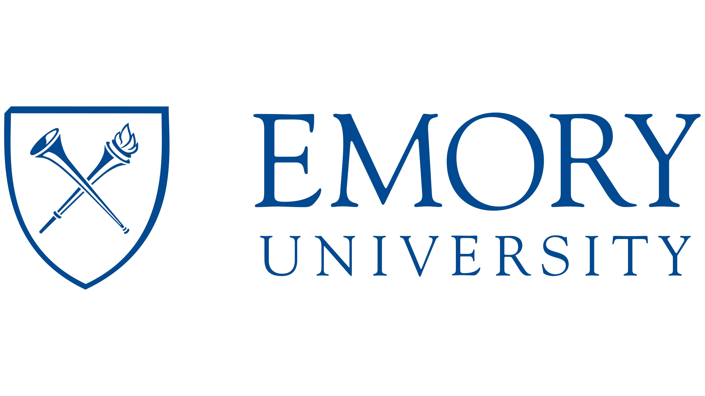
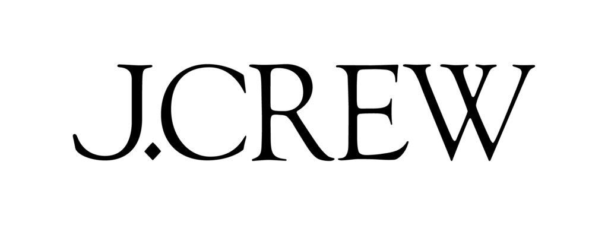
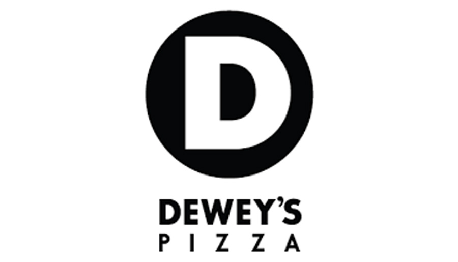

Below is Ajit's entire Work history including Internships and Part-Time jobs.
| Work Experience | ||||||
|---|---|---|---|---|---|---|
| Logo | Date | Length | Company | Title | Location | Experience |
 |
Oct. 2022
- Oct. 2024 |
24 months | Southern Glazers Wine & Spirits | Digital Product Lead - Supplier Journey AI | Remote - Working in Fort Thomas, KY
HQ Travel to Miami, FL |
Pioneered digitization of industry functions for distribution of 100+ premium wine and spirits brands through Salesforce
and native Generative AI solutions to align with Enterprise Goal of establishing Digital Transparency to key Suppliers
• Led rollout of the first-of-its-kind, native AI-Generated Next Best Action tool to 20+ end users in one dedicated sales division, to enhance high-volume brand presence in one critical client's high-impact universe of accounts. • Oversaw the development of one new product by leading a team of 8 developers through bi-weekly Agile sprints • Managed the adoption of the Salesforce-powered, Proof 360 product for 50+ Suppliers by provisioning 1K+ users and setting up the service-desk • Standardized $50M+ of Incentive payouts to Sales Agents and integrated with four internal products including SAP |
 |
Jul. 2021
- Oct. 2022 |
16 months | Oracle Health (Cerner) | Senior Associate Director - Product Management | Kansas City, MO
Worked remotely due to COVID-19 |
Guided the $28M, Salesforce-powered HealtheCRM product through six quarters while managing 90% team attrition
• Set the 2022 annual roadmap by prioritizing 30+ features for development and building their respective use-cases • Led mandatory data migration efforts for 14 clients by identifying four testing partners and creating three testing scenarios, building an implementation plan spanning four months, and coordinating additional storage with Salesforce • Directed weekly C-Suite engagement for product by ensuring 30+ product documents and presentations were current |
 |
Apr. 2020
- Dec. 2022 |
8 months | Emory University | Operations Strategy TA | Atlanta, GA
Remote due to COVID-19 |
Virtualized and updated course content during summer 2020 to enable asynchronous engagement for 120 MBA and BBA students; leading seven TAs during fall 2020 for three classes |
| May. 2020
- Aug. 2020 |
3 months | Dr. Noze Best | MBA Intern, New Product Development Strategy & Growth | Atlanta, GA
Remote due to COVID-19 |
Startup focused on developing innovative pediatric cold care solutions to provide a safe and good night sleep for babies
• Pitched humidifier prototype to 10 venture capital and private equity investors to seek $1MM+ in funding • Performed market research on 50+ humidifiers using the Amazon Scout tool to forecast demand of the competitive landscape, build a financial model, and develop a go-to-market strategy to effectively take new prototype to market |
|
 |
Jun. 2014
- Jun. 2019 |
61 months | Accenture | Consultant - held roles as Project Manager and Business Analyst | Arlington, VA
Heavy travel to Department of Defense Healthcare Sites in Washington, Idaho, and California |
Supported high-visibility Public Sector projects including the $500MM critical fix of Affordable Care Act website as well
as supervised the onsite deployment of $4.3B Cerner Electronic Health Record system for the Department of Defense
• Oversaw four different military hospitals and clinics to drive a 20% increase to central data portal adoption which provided real-time metrics to the client’s dashboard in Washington, D.C. and streamlined the decision-making process • Managed a team across four U.S. time-zones to ensure that 40+ subject matter experts arrived onsite, on-time, and without any security issues for 150+ sessions with hospital/clinic leads at major deployment events and activities • Created and maintained the project’s ‘one source of truth’ by managing the central SharePoint portal for 500+ users in compliance with Department of Defense and HIPAA standards and aggregating data in Tableau and Excel dashboards • Improved team efficiency 1.5x by understanding critical project technologies such as Splunk, SAS, and MarkLogic which empowered peers to speak technically with other teams and function independently during ad hoc analysis • Led my team in resolving 1M+ incidents and 200+ system defects, including Congressionally escalated issues dealing with missing enrollments and allocation of tax credits, by working with cross-functional teams and using SQL |
| Apr. 2013
- Oct. 2013 |
7 months | Impulcity | Mobile Applications Tester | Cincinnati, OH | Developed and executed functional test scripts and identified defects for ten version releases of the Impulcity start-up mobile app. | |
 |
Mar. 2011
- Jul. 2012 |
17 months | J.Crew | Sales Associate | Cincinnati, OH | Provided quality customer service to shoppers by answering questions, making suggestions and locating items to increase sales while maintaining the pristine image of the store. |
 |
Jul. 2010
- Oct. 2010 |
4 months | Dewey's Pizza | Chef | Cincinnati, OH | Created the highest quality pizza with high quality ingredients to deliver the most satisfaction towards our customers. |